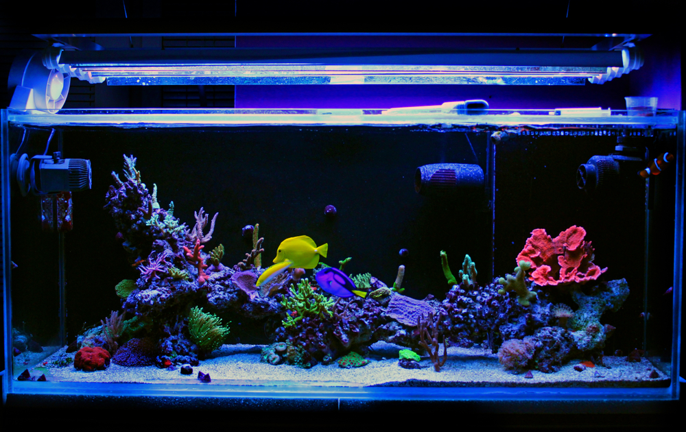

Tipos de agua para aquário:
Agua Doce

O aquário de água doce é a opção mais prática. Pode ser utilizado em qualquer tamanho e pode se encher com água de torneira. Porém, é preciso trocar a água com frequência. Além disso, ele atinge o equilíbrio de temperatura rapidamente e a decoração é barata.

Outro ponto importante é a escolha do filtro. Os filtros externos retêm a sujeira da água, sendo extremamente necessário estarem ligados 24 horas por dia. É importante limpá-los quinzenalmente e a troca de refil deve ser feita todo o mês.
Peixes Recomendados

Tetra Neon

molinésia negra

Peixe Plati

Betta Halfmoon